AI Engineer · Data Scientist · Agentic AI Builder · Philosopher
Amir Kiani
I build production agentic AI systems and engineer LLM-powered products end to end — from multi-agent orchestration to RAG pipelines to deployment. My PhD in philosophy also shapes how I think about AI safety, ethics, and alignment.

Click any card below for the full write-up ↓
Featured Work
Agentic AI Work
Founder Product
VoiceCaptures — AI Voice Agent
Conversational Voice AI (STT/TTS)
Twilio Telephony
Google Calendar API
Dynamic Call Routing
Real-time Intent Parsing
voicecaptures.com →
Founded and built an AI voice agent for home service businesses that answers every call 24/7, qualifies the job in conversation, checks real calendar availability, and books it — live, on the call.
Why it matters
$75B
Lost annually to unanswered business calls (Forbes)
85%
Of callers won't leave a voicemail (Forbes)
62%
Of customer calls land outside business hours (HomeAdvisor)
How it works
- Customer calls the business's existing number.
- Call forwards to the AI when busy, on a job, or after hours.
- AI collects and confirms every detail — name, phone, address, issue.
- Checks the real Google Calendar and books an open slot live on the call.
- Business owner and customer both get a text confirmation.
Fully customizable
Voice, greeting, business hours, appointment length, and services are all configurable per business — built for plumbing, HVAC, electrical, roofing, pest control, landscaping, general contracting, and locksmith trades.
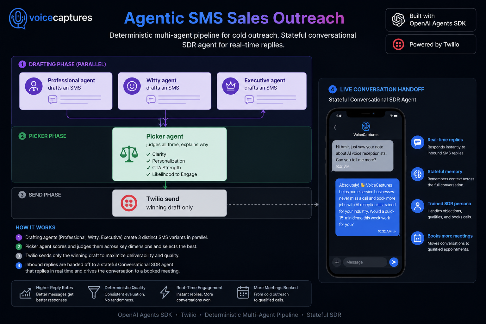
Multi-Agent System
VoiceCaptures SMS Outreach Agent
OpenAI Agents SDK
Multi-Agent Orchestration
Drafting · Picker · Triage · SDR Agents
Twilio SMS
FastAPI
Supabase
View repository →
Agentic SMS sales outreach for VoiceCaptures, built on the OpenAI Agents SDK and Twilio. Sends bulk cold outreach via a deterministic multi-agent drafting/picker pipeline, then hands live conversations to a stateful conversational SDR agent that responds to inbound replies in real time.
Design note: admin console vs. public demo
/demo is the safe, public-facing preview (no Twilio access, request queue only). /admin is a password-protected operator console showing real prospects and conversations, built so the real workflow (poll → triage → draft → human review → send) is screen-recordable for a portfolio video instead of living only in a terminal.
Design note: minimal leads
Only name and phone are required anywhere in the pipeline — the CSV importer, demo page, and hook agent all degrade gracefully to a generic-but-relevant message when other fields are missing.
Project layout
app/agents/ agent definitions (drafters, picker, triage, SDR) app/tools/ function_tools (send_sms, db read/write) app/db/ Supabase client + schema app/routes/ FastAPI webhook routes
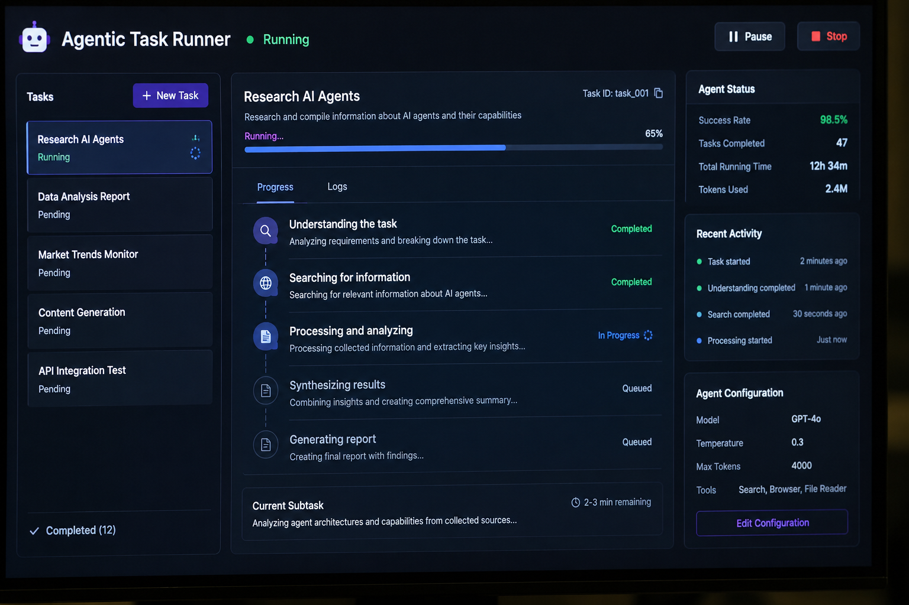
Agentic AI Project
Agentic Task Runner
FastAPI
OpenAI Agents SDK
function_tools · tool_choice=required
Deterministic Rule-Based Router
JSON Persistence
View repository →
A FastAPI app where an agent parses a plain-language task, selects and executes tools in sequence, and returns a transparent, numbered execution trace with persistent history.
Tools implemented
- TextProcessorTool — uppercase / lowercase / word count
- CalculatorTool — addition / subtraction / multiplication / division
- WeatherMockTool — mock weather for a city (no external API)
- UnitConvertor — km↔miles, °C↔°F, kg↔lbs
- DirectAnswerTool — explicit fallback when no other tool applies
Key design decision
Started with a custom planner/executor design, but switched to native @function_tool + tool_choice="required" — each tool call happens with real prior results already in context, since the SDK's own conversation loop handles that automatically. Added DirectAnswerTool as an explicit "no tool applies" option to stop the model misusing the nearest tool on trivial inputs.
Retrieval-Augmented Generation
RAG Projects
DeepChef — Recipe Recommender
OpenAI Embeddings
Semantic Search
BERTopic
spaCy / NLTK
scikit-learn · UMAP
Selenium (scraping)
Streamlit (deployment)
Project Overview
I created a recommender system on a dataset of over 520k recipes scraped from food.com as my capstone project for the bootcamp — titled DeepChef. DeepChef harnesses the power of state-of-the-art large language models and semantic embeddings to create a recommender system that takes in users' favorite recipes — ingredients or instructions, along with themes or other elements — and returns the 5 most similar recipes from the dataset.
Video Tour
Watch the video walkthrough on Loom →
The App
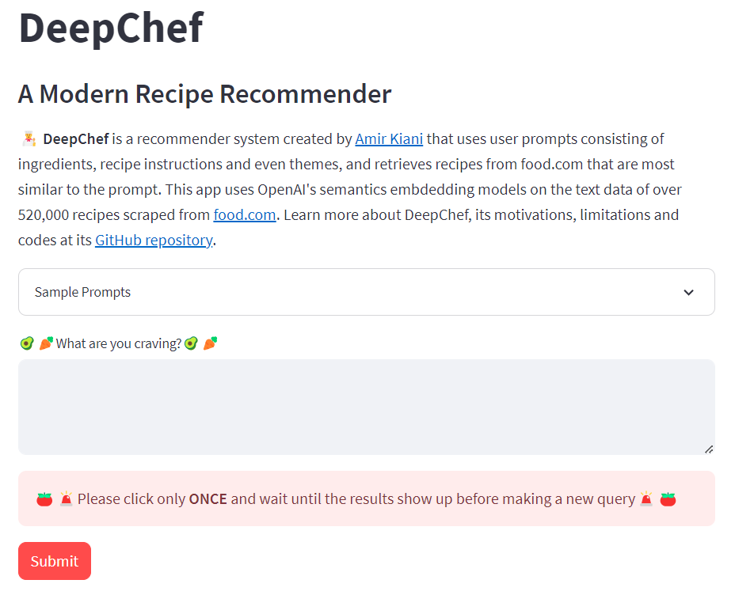
Deployed as an interactive app: deepchef.streamlit.app →
Technologies Used
GitHub Repo
For codes, implementation, data sources, and limitations: DeepChef - Recommender System →
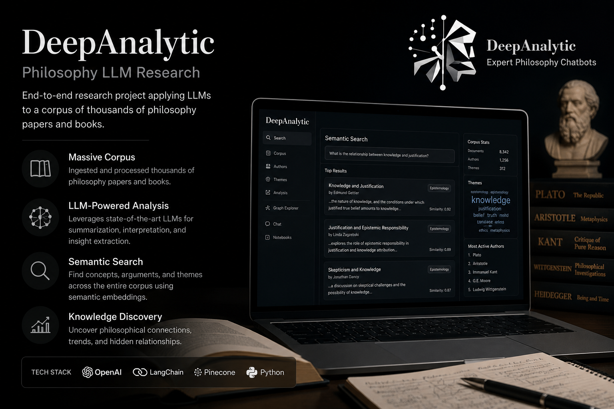
DeepAnalytic — Philosophy LLM Research
Naive / Rerank / Multiquery / Advanced RAG
Sentence Transformers (fine-tuned)
Topic Modeling
NLI Benchmarking
Web Scraping
Repository (in progress) →
Project Overview
DeepAnalytic is an ongoing end-to-end team project applying LLMs to Analytic Philosophy across thousands of papers and books. A large corpus has been scraped from leading academic journals, and cutting-edge NLP and Gen-AI tasks are being performed on it for research. In the coming months, access will open to researchers in the field, then to the public.
RAG architecture progression
- Naive RAG (chunk-400,
text-embedding-3-small, cosine similarity) - RAG + Reranking
- Multi-query generation RAG
- Custom Multi-Query + Critique + Rerank + Generate pipeline (agentic RAG)
- Systematic pipeline & parameter benchmarking
- Sentence-transformer fine-tuning for domain-specific vectorization
- Natural Language Inference (NLI) dataset construction
Data & scope
Metadata for 28 Springer Nature philosophy journals (~800k pages), the entire Stanford Encyclopedia of Philosophy (2024 edition), and 10k+ pages from Analysis and other publishers, scraped and preprocessed for research use.
Analysis & Statistics
Data Analytics

Big Data Wrangling — Google Books Ngrams
Loaded, filtered, and visualized a dataset spanning 4% of all printed books (1800s–2000s) in a cloud distributed-computing environment.
Hadoop
Spark / PySpark
Hive
AWS S3
Repository →
Overview
Applies Big Data skills to the Google Ngrams dataset — content from Google Books encapsulating ~4% of all printed books, spanning the 1800s to the 2000s.
Focus: proficient loading, filtering, and dynamic visualization of an expansive dataset within a cloud-based distributed computing environment, using Hadoop, Spark, Hive, and S3.
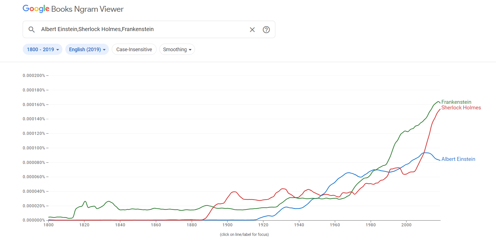
GitHub Repo
This project contains two files:

Bixi Bike Usage — Trend Analysis
SQL-driven exploration of Montreal's bike-share system, paired with an interactive drill-down Tableau dashboard.
SQL
Tableau
Data Wrangling
Repository →
Overview
BIXI Montreal, established in 2014, owns 10,000 bikes across nearly 800 stations (as of 2023). Goal: understand usage drivers, popular stations, and business growth, using April–November 2016 & 2017 data.
Centerpiece deliverable is an interactive drill-down Tableau dashboard exploring hidden usage patterns.
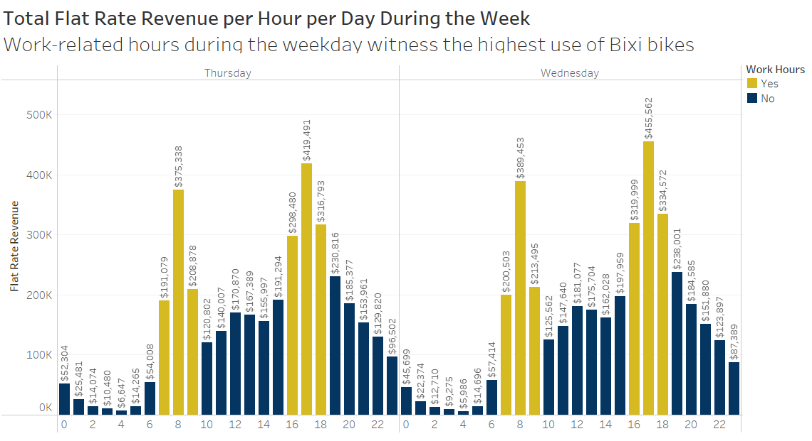
GitHub Repo
SQL Codes (Parts 1–4) → · Final Tableau sheets and reports to be uploaded soon.
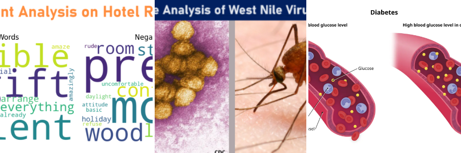
Other Data Analytics Projects
Three additional EDA & ML studies — sentiment classification, public-health prediction, and hospital readmission risk.
NLP pipeline from EDA through feature engineering to sentiment classification — comparing Logistic Regression, PCA, KNN, and Decision Trees, refined with cross-validation. Repository →
Statistical and predictive modeling of Chicago mosquito trap data for the city's public health monitoring program — chi-square testing, then linear and logistic regression on WNV prevalence. Repository →
Explored ~100k U.S. hospital records (1999–2008) to identify sub-groups at higher readmission risk, then modeled readmission with logistic regression. Repository →
Research & Public Voice
Podcast & Talks
AI safety, ethics, and machine consciousness.
Virtuous Machines — the podcast
Conversations at the intersection of AI and philosophy with researchers in AI safety, ethics, and emerging tech. 13 episodes and counting, on YouTube and Spotify.
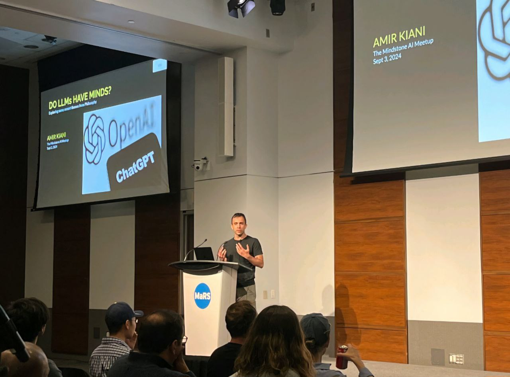
Public Engagements
- The Ethical Frameworks Underneath Frontier AI Models — The AI Collective, Jan 2026
- AI Consciousness Through Connectionism — Microsoft, Vancouver, Oct 2024
- Corporate Transparency in the Age of Advanced AI — University of Toronto, Feb 2025
- Toronto AI Safety Day — Petrov Day Tribute (co-chair) — The AI Collective Toronto, Sept 2025
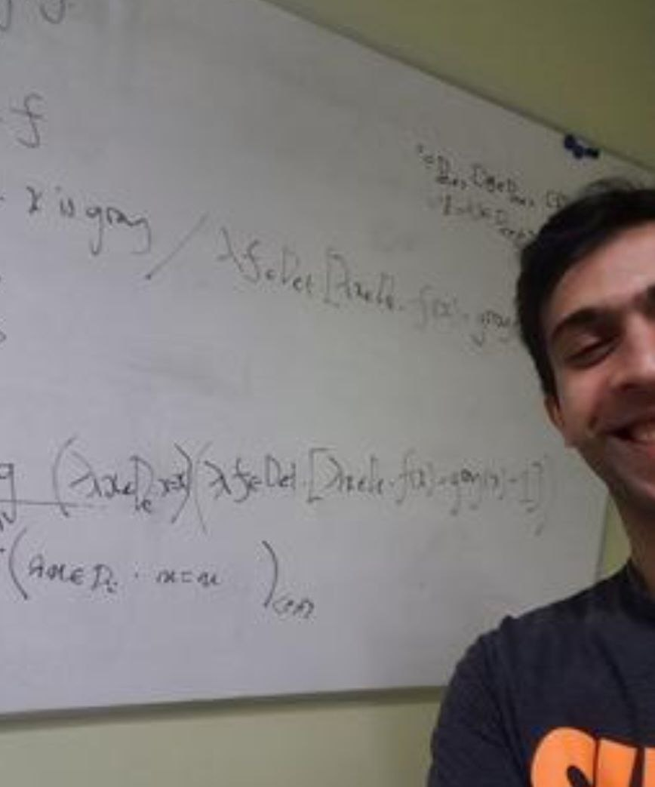
Research & Writings
- Introspection in AI: What Anthropic's New Paper Really Shows — Dec 15, 2025
- Do LLMs Have Minds? Evidence of Information-Carrying Representations — Nov 17, 2024
- Chomsky Against Large Language Models — A Response — Aug 21, 2024
Publications
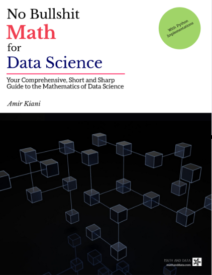
No Bullshit Math for Data Science
Amazon →
Book PDF →
Data science is an interdisciplinary, growing field that uses scientific methods, processes, and algorithms to extract or extrapolate knowledge, patterns, and insights from various kinds of structured, semi-structured, and unstructured data for various real-life and theoretical purposes.
To become a data scientist, one must have a solid foundation in mathematics, programming skills, and domain expertise — able to work with large datasets, analyze data using statistical techniques, communicate findings, and design predictive models using machine learning.
As someone engaging with math for over a decade, I found few books teach the mathematics underneath data science in a comprehensive, short and sharp manner — most are ~350 pages, expensive, code-heavy, and light on actual math teaching. This book aims to fix that.
Part I explores core mathematics — Linear Algebra, Calculus, Statistics, and Probability Theory. Part II builds on this to cover the underlying mathematics of Regression, Tree Methods, Support Vector Machines, Clustering, PCA, and Neural Networks, with Python implementations throughout.
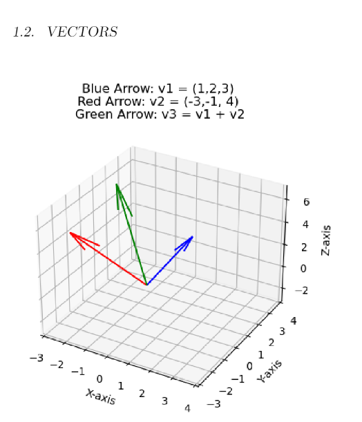


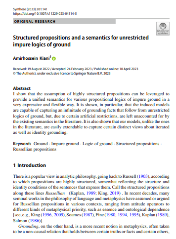
Structured Propositions & Logics of Ground
Read paper →
Abstract
I show that the assumption of highly structured propositions can be leveraged to provide a unified semantics for various propositional logics of impure ground in a very expressive and flexible way. It is shown, in particular, that the induced models are capable of capturing an infinitude of grounding facts that follow from unrestricted logics of ground, but, due to certain artificial restrictions, are left unaccounted for by the existing semantics in the literature. It is also shown that our models, unlike the ones in the literature, are easily extendable to capture certain distinct views about iterated as well as identity grounding.

Practical Statistics for Data Practitioners
Repository →
Practical Statistics for Data Practitioners is an open-source, hands-on guide that introduces the essential descriptive and inferential statistics needed in real-world analytics and machine learning pipelines. Designed for data analysts, scientists, engineers, and students, it emphasizes a "read → run → apply" learning approach by pairing each concept with clear intuition, minimal proofs, and fully reproducible Python code.
Covers measures of central tendency and dispersion, hypothesis testing, A/B testing, and regression models, illustrated with end-to-end examples using pandas, NumPy, SciPy, and statsmodels.
Education

MA & PhD, Philosophy (Logic, Semantics & Metaphysics)
University of Calgary (2023) · University of Tartu (2019)
Overview
After years of exposure to mathematical logic in my undergraduate years, I grew interested in the philosophical ideas behind math and logic and did my MA in Philosophy at the University of Tartu in Estonia.
I then continued into a PhD at the University of Calgary, where over 4 years I engaged in research in Logic and Metaphysics.
Research
My MA thesis, Perception, Abductive Methodology, and Compositional Universalism, argued for compositional universalism — the view that any plurality of objects constitutes an object. Read the thesis →
My PhD research focused on questions of fundamentality, with a secondary interest in IT ethics, AI safety, and machine consciousness that I still work in today. Read the dissertation →
One dissertation chapter was later published in Synthese. Read the paper →
Teaching
Taught a graduate-level logic course on modern modal logics to 10+ masters and PhD students across Philosophy, Mathematics, and Semiotics during my MA.
During my PhD, taught hundreds of students on AI, IT, and data ethics — deepening my grounding in AI safety debates. I write on these topics at substack.com/@llminds and occasionally for Wikipedia and the Centre for Social Impact Technology.
Awards
MA scholarships (over $24,000):
- Best MA Thesis Prospectus of The Year Award, University of Tartu (2018)
- Tuition Waiver Scholarship, University of Tartu — CA$6,300/yr (2017 & 2018)
- DoraPlus Scholarship, University of Tartu — CA$5,700/yr (2017 & 2018)
- Achievement Stipend, University of Tartu (2018)
- Excellence Scholarship for Travel and Accommodation, University of Tartu
PhD scholarships (over $50,000):
- Alberta Graduate Excellence Scholarship (AGES), International — CA$15,000 (2021, 2019)
- Department of Philosophy Graduate Essay Award — CA$2,500 (2021)
- Full Funding Package (4 years) — CA$30,000/yr (2019–2023)
Transferable Skills

BSc, Mathematics & Applications
Tehran Polytechnic (Amirkabir University of Technology), 2017
Overview
Undergraduate in Mathematics and Applications at Amirkabir University of Technology in Iran. My final thesis was on mathematical logic, with broad coursework across pure and applied math.
Coursework
Research
Thesis on coalgebraic logics — Logics for Coalgebras, and a Final Coalgebra Theorem (written in Persian). Read the thesis →
Transferable Skills
Awards & Certificates
Google × BrainStation — 24hr Industry Hackathon
Won first place designing "Insights" — a widget using LLMs to give users transparent, plain-language explanations of how Google's AI features use their data, addressing trust, privacy, and explainability concerns.
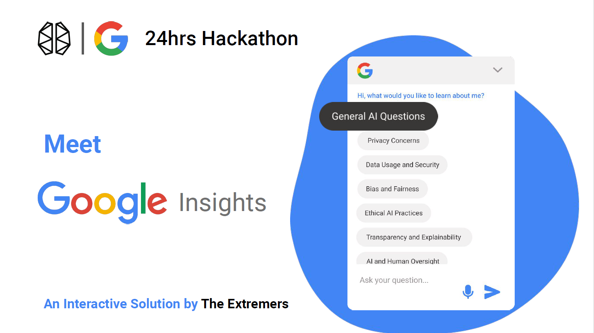
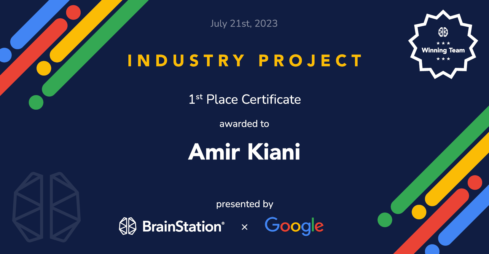

BrainStation — Data Science Diploma
3-month intensive data science bootcamp

Google Cloud Platform
Cloud & ML infrastructure certification
Let's talk
Building AI agent systems, doing data science, or thinking through AI safety and ethics — I'd love to hear from you.
© 2026 Amir Kiani